MY EXPERIENCE DURING MY INTERSHIP IN JOVIAN MANDAGIE
Hi guys i want to share my experience during my diploma intership which is in Jovian Mandagie that are located at JM Tower, Jalan Plumbum P 7/P, Seksyen 7, 40000 Shah Alam, Selangor. This journey start when i started join the production team.At first i am very nervous because this is my first day in this team and i need to adapt with the environment and also the work. But the good thing about this team they very helpful and they are very friendly with me. Although only a few weeks of acquaintance I already feel comfortable with them and consider them like my own family.They taught me patiently about things I did not know. Other than that I am very happy and grateful to know them there. There is a lot of new knowledge I learned there. At the same time, I also gain my knowledge and experience at that time which is i'm still young and need to learn a lot of things. So that i will share with you guys my photo with the production team that will organise all the production things and the sample of every design before send to the factory. But this company also made a custom made appreal for a person that required exact size and design. So,here we go! Enjoy
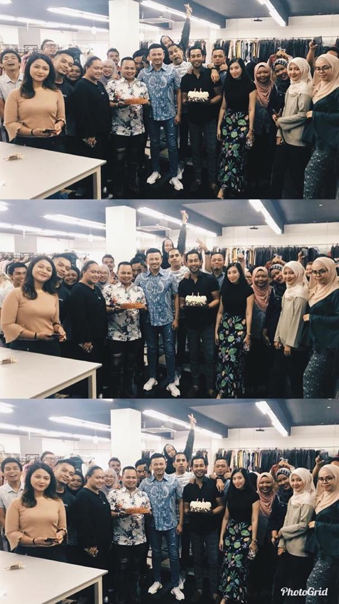 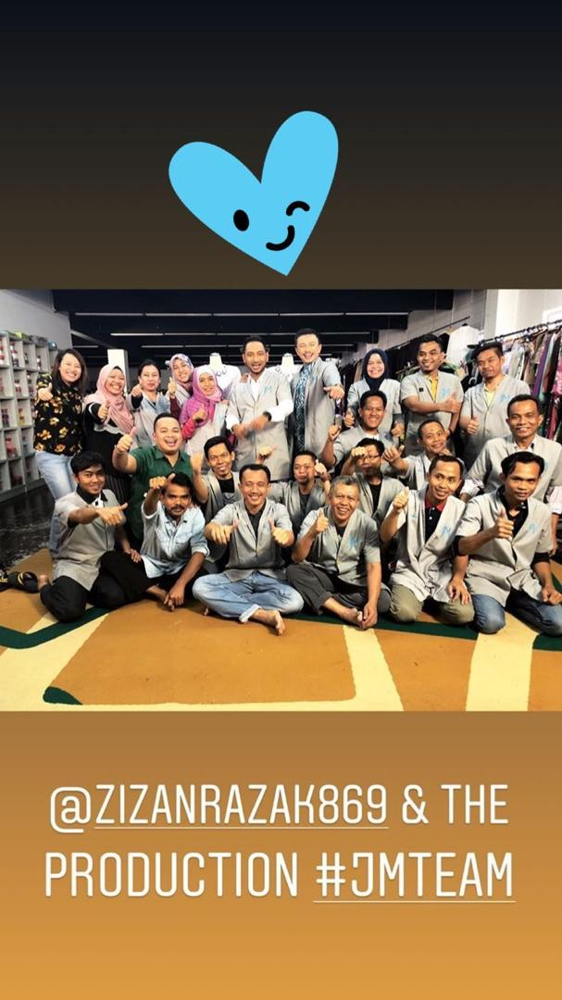
I very enjoy get the oppurtunity working with them because I can get many experience and also and learn many things from them. But during the hectic week, we can cooperate do all the work together and it was a fun when we sucess to through that week. After that , i get the oppurtunity to celebrate our boss birthday during the ramdhan. So here I share a few memories I have with them there that will never be forgotten.
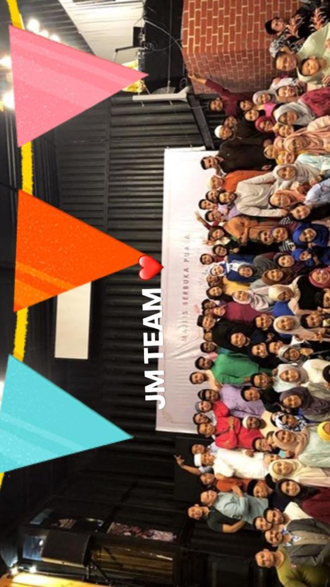 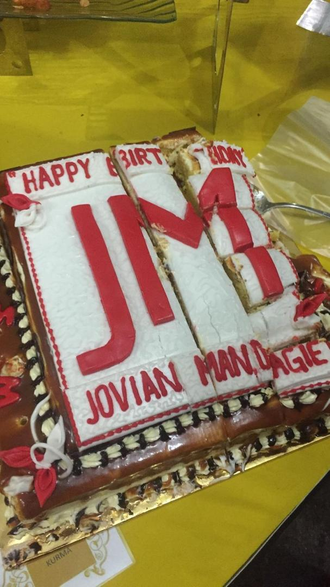 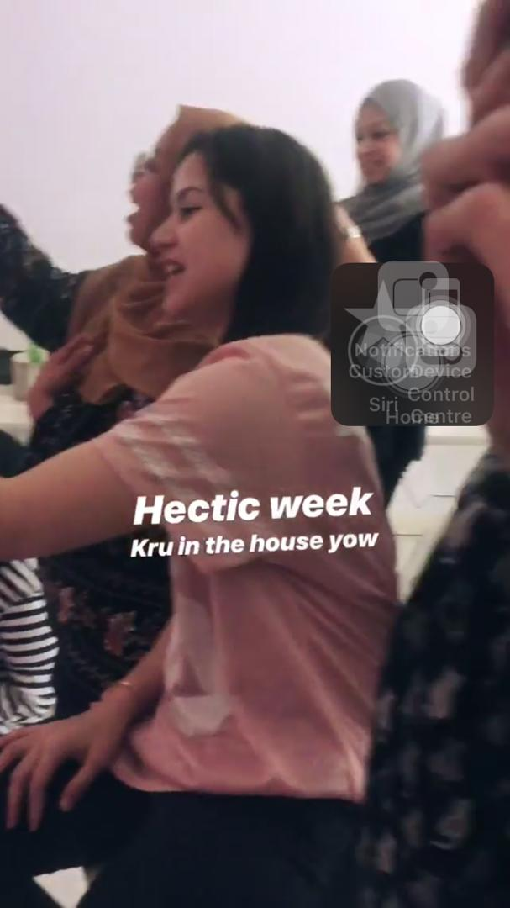
Lastly, during this journey i was meet many person that very kind and of course this will become a beautiful memory for me in my life. So here are the person and some of the events that we have been through together !
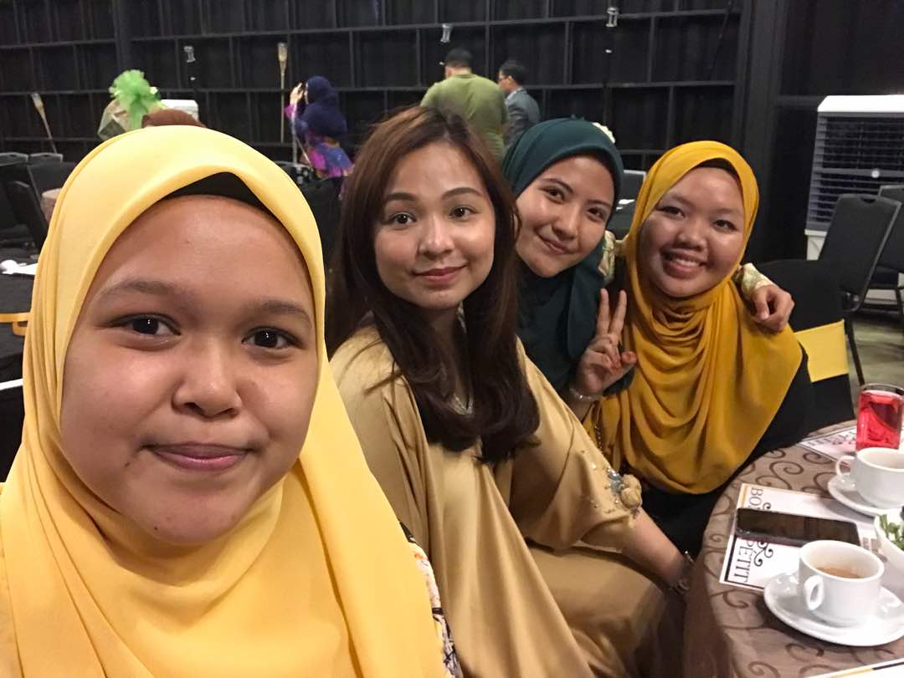 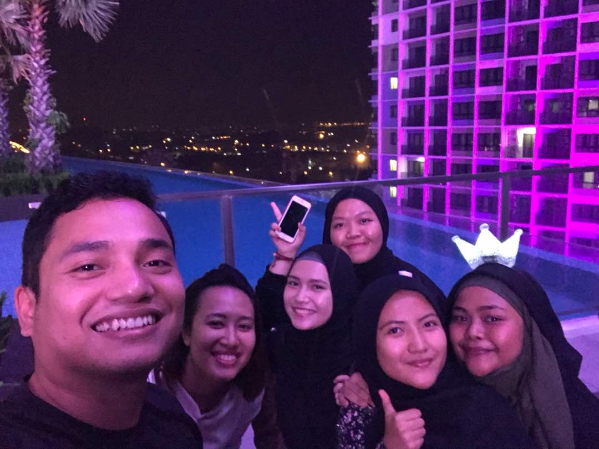 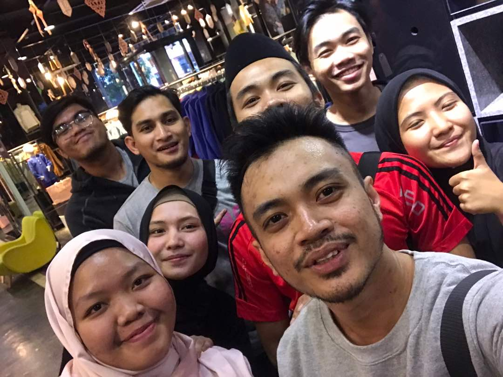
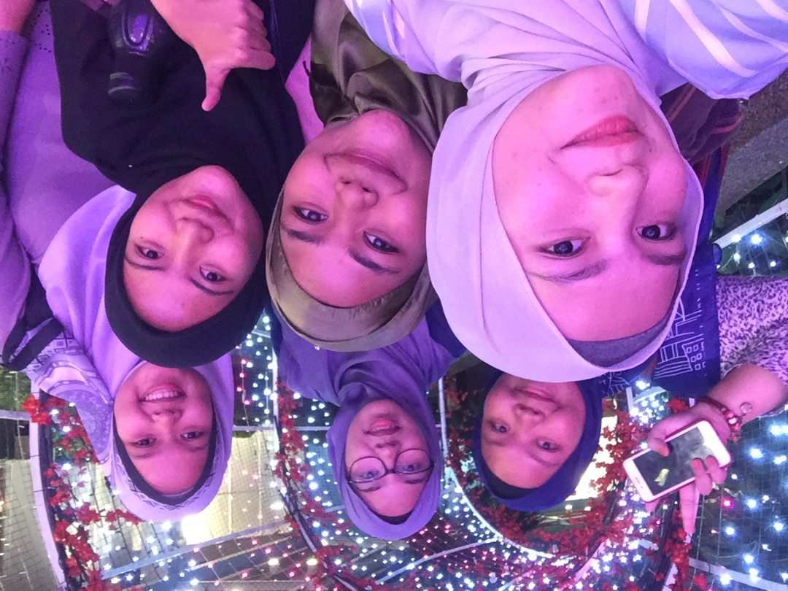 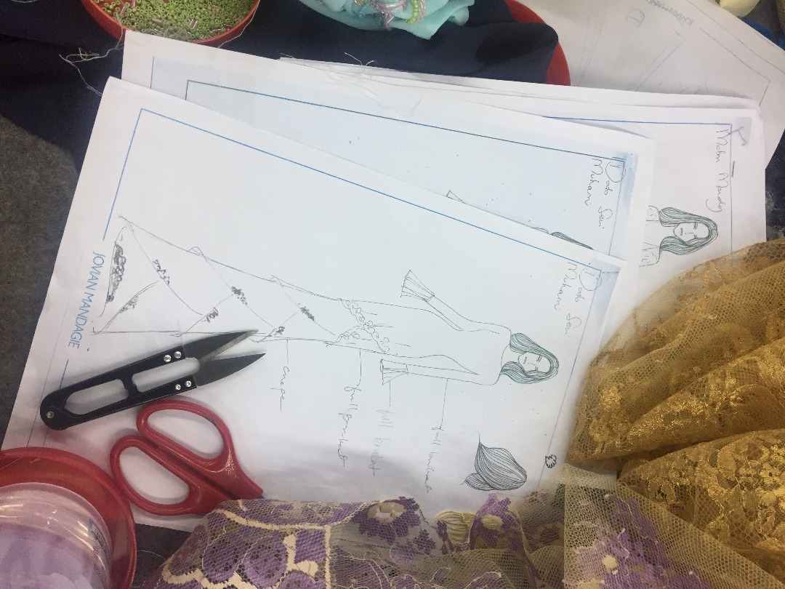
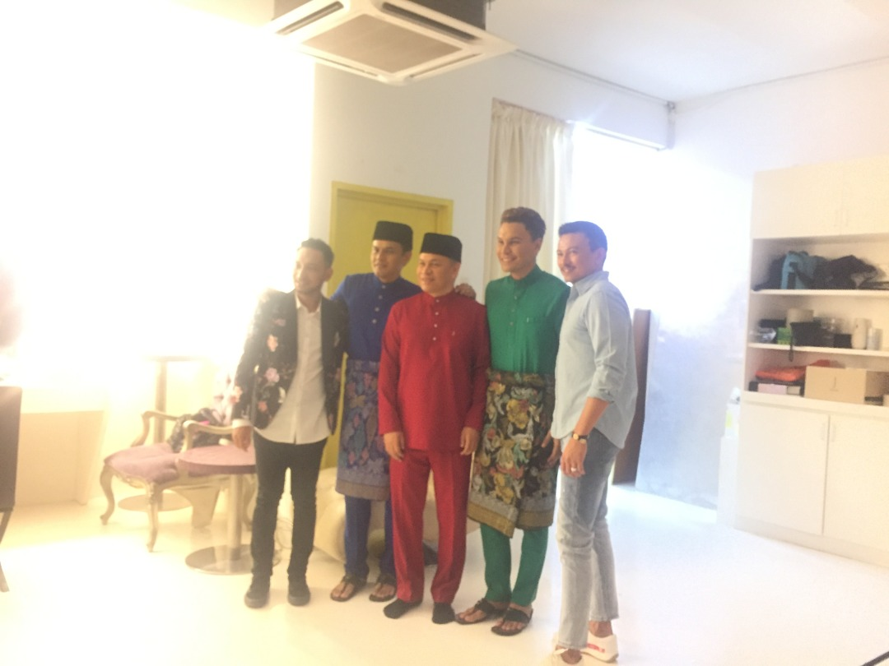
"The only source of knowledge is experience-Albert Einstein "!